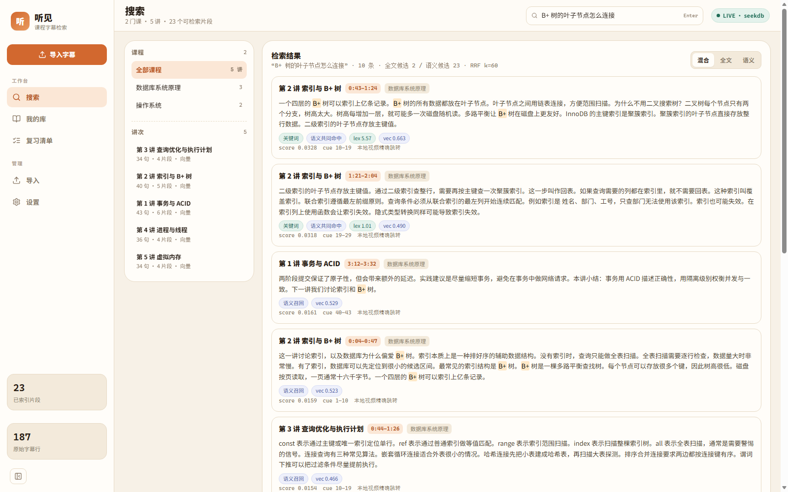
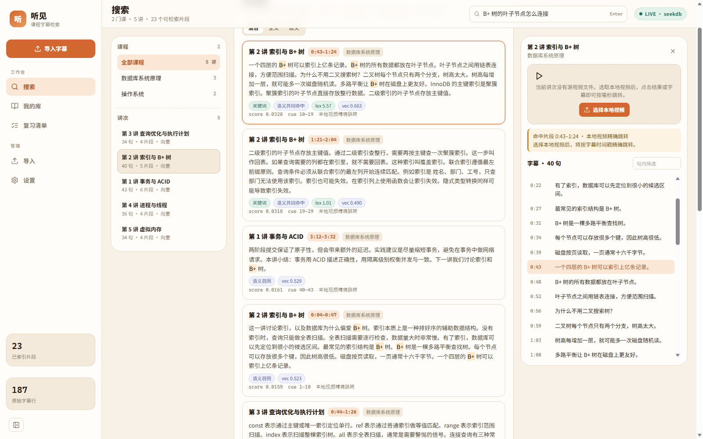
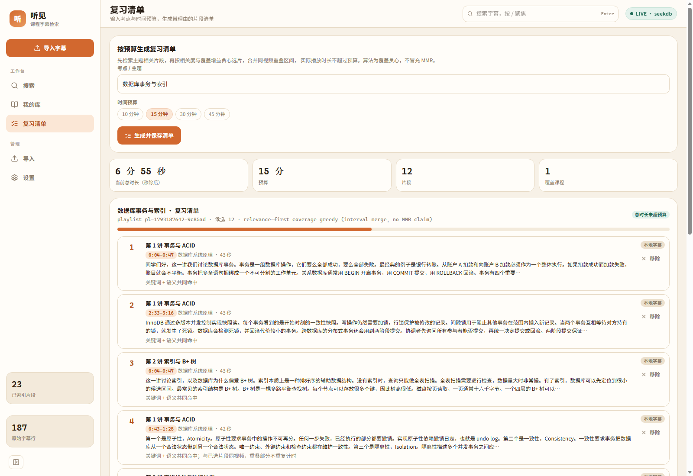
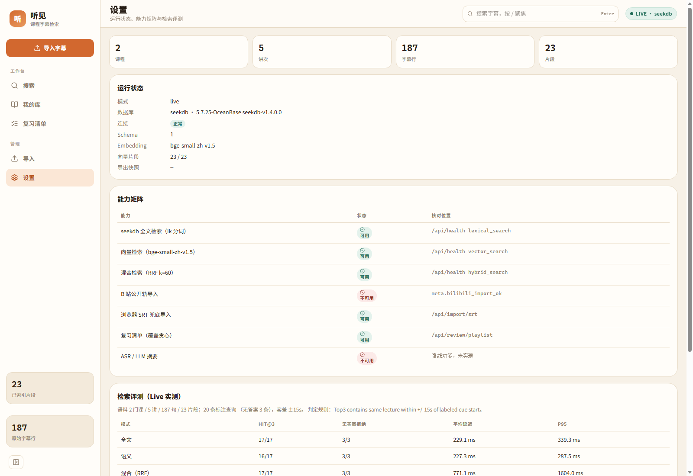
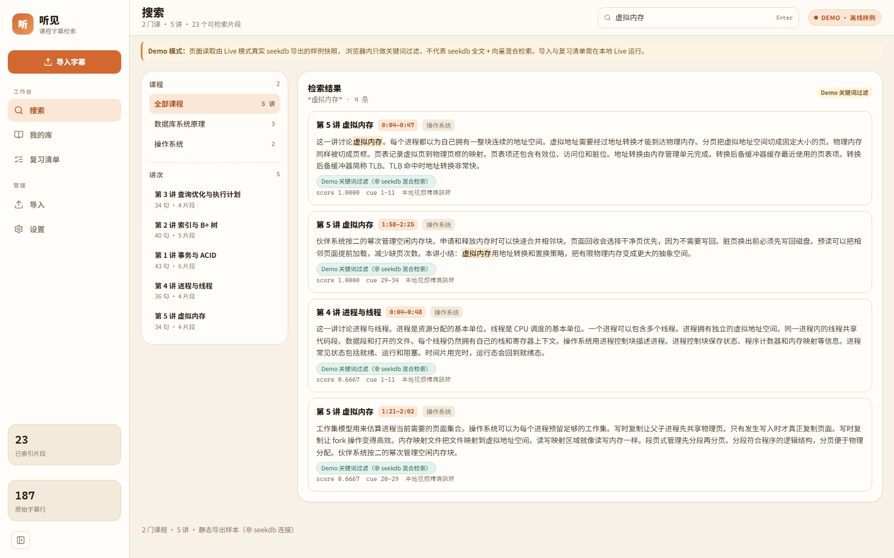
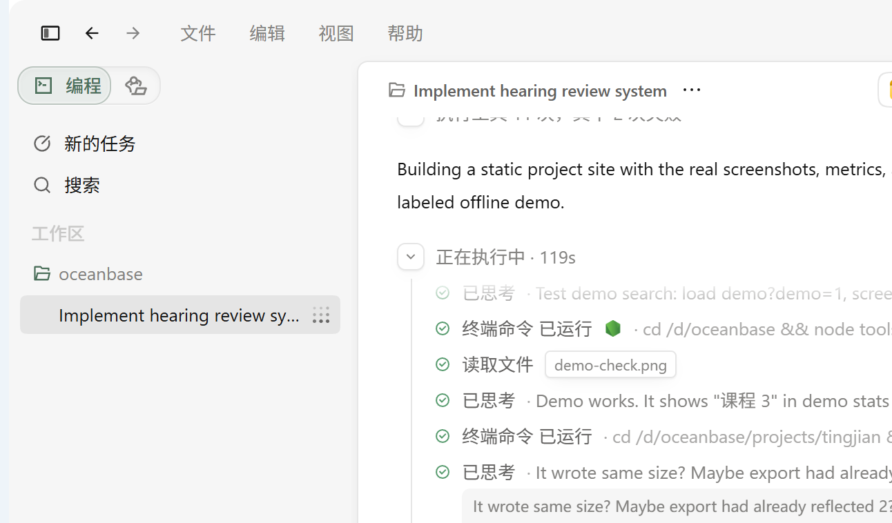

字幕落库，可追溯
解析 SRT / VTT，按 20–45 秒切分为语义片段，保留 cue → passage → hit 的全链路映射。重复导入按 source_hash 与 index_version 幂等处理。
- seekdb FULLTEXT + ik 分词
- VECTOR(512) + HNSW / VSAG
- 原始字幕与片段一一对应
课程视频越积越多，真正难的是在复习时找回“老师到底在哪一分钟讲过这个点”。 听见把字幕切成语义片段，写入 seekdb，用中文全文 + 向量混合检索定位到具体讲次与时间戳。
演示站为离线样例：搜索在浏览器内完成，用于评审体验；真实检索需按运行说明连接 seekdb。完整源码与开发记录已公开。

它解决什么
通用搜索只给视频标题，播放器进度条又无法回答概念问题。听见把字幕当作一等数据： 逐句保留时间戳，按语义切段，建立全文与向量索引，并让每条结果都能回溯到原始字幕。
解析 SRT / VTT，按 20–45 秒切分为语义片段，保留 cue → passage → hit 的全链路映射。重复导入按 source_hash 与 index_version 幂等处理。
中文全文召回与 bge-small-zh-v1.5 语义召回并行，RRF（k=60）融合排序。关键词覆盖过滤压掉弱相关结果，低于阈值时明确回答“没找到”，不硬凑答案。
输入考点与可用时间，按相关度优先、覆盖增益贪心选片；同一视频的重叠区间合并计时，保证实际播放时长不超预算，并给每条片段写明入选理由。
真实界面
结果卡直接给出讲次、课程、时间戳、命中原因与片段原文。点开右侧检查器可以查看该讲次全部 40 条字幕， 点时间戳即可带着定位参数跳转播放器；不确定答案时，系统会说明“没有足够证据”，而不是给出看似合理的错误片段。

复习清单
以「数据库事务与索引」为例，15 分钟预算生成了 12 个片段、总时长 6 分 55 秒。 系统会合并同一讲次中重叠的播放区间，避免把同一段内容重复计时；覆盖增益只作为相关度之后的次级信号， 不会为了“看起来多样”塞进无关课程。

技术实现
字幕、片段、向量与全文索引都在 seekdb 中；应用层不维护第二套检索状态，也不使用 SQLite / Mock 冒充数据库能力。
可核对的结果
20 条人工标注查询（17 条有答案、3 条无答案），判定规则为 Top3 命中同一讲次且起点在标注时间 ±15 秒内。下表来自 scripts/eval_run.py 的真实运行输出。
| 模式 | Hit@3 | 无答案拒绝 | 平均延迟 | P95 |
|---|---|---|---|---|
| 全文（ik） | 17/17 | 3/3 | 197.9 ms | 222.6 ms |
| 语义（bge） | 16/17 | 3/3 | 210.7 ms | 243.1 ms |
| 混合（RRF） | 17/17 | 3/3 | 347.0 ms | 472.0 ms |
语义模式仍有 1 条同义改写（「最左前缀原则」）未命中，已保留在失败样本中，没有调参掩盖。
延迟为单机 Docker 环境实测均值，会随机器负载波动。M0 门禁、单元测试、集成测试与前端构建全部通过，日志保存在仓库 artifacts/verify/。


体验入口
在线演示只加载离线快照，支持关键词过滤与片段查看，不需要登录，也不会连接任何后端。要验证全文 / 向量 / RRF 的真实行为，请按运行说明启动 seekdb 与 FastAPI。
运行说明
完整步骤、环境变量与故障排查见仓库 README。以下命令在项目根目录执行。
docker run -d --name seekdb-sdd -p 2881:2881 \
quay.io/oceanbase/seekdb:latestpython -m venv .venv
.venv/Scripts/pip install -r apps/api/requirements.txt
.venv/Scripts/python scripts/import_fixture.py.venv/Scripts/python -m uvicorn main:app \
--app-dir apps/api --port 8001
cd apps/web && npm install && npm run dev一条命令跑完 M0、单元测试、集成测试、评测与前端构建：
bash scripts/verify.sh验证样例：搜索「B+ 树的叶子节点怎么连接」，预期首条为「第 2 讲 索引与 B+ 树」，片段区间 00:43–01:24，展开检查器可看到 40 条原始字幕。
评测输出写入 artifacts/metrics.json，M0 报告写入 artifacts/m0-report.json，逐步日志在 artifacts/verify/。
Qoder 开发记录
项目按架构文档的优先级推进：先过 M0（字幕落库与可追溯），再做全文检索与 UI，随后接入真实向量、RRF 与评测，最后实现预算内复习清单。 每一阶段的真实命令输出、失败与修复都保留在仓库的开发记录中。
SRT 解析、幂等导入、cue/passage 对齐；匿名轨不可用如实记录并保留 SRT 回退。
ik 全文、关键词覆盖、检查器与时间戳跳转；修复大小写导致的词项漏匹配。
接入 bge-small-zh-v1.5、RRF k=60、无答案阈值；20 条标注集真实评测。
相关度优先贪心、区间并集计时；修掉跨课程稀释与重复计时两个真实缺陷。

完整时间线与命令记录：DEVELOPMENT_LOG.md · 验证材料与截图：artifacts/
边界与已知限制
匿名公开轨在本机网络不可用；配置本机登录态后可读取 AI 字幕轨，并在入库前按时长校验覆盖率，防止串台。未使用伪造字幕冒充公开轨；也保留浏览器导出 SRT 后上传的回退。
样例语料为 2 门课、5 讲、187 条字幕，用于完整验证链路，不代表大规模课程库性能。评测延迟是单机 Docker 实测值。
尚无真实用户使用统计，因此站点不展示使用人数或提效比例；上线后的站点访问统计可在 Qoder Sites 后台查看。
未实现，能力矩阵中明确标注“不可用”，不以占位功能冒充完成。